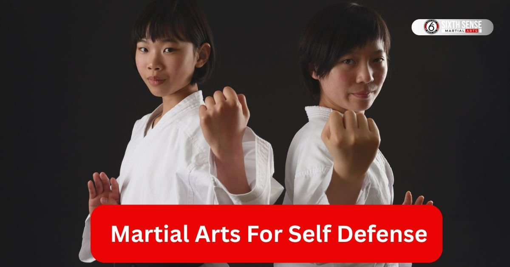
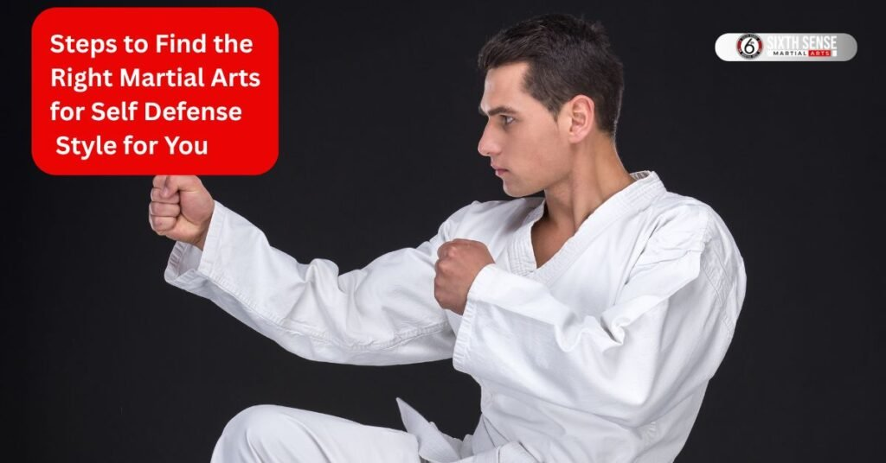
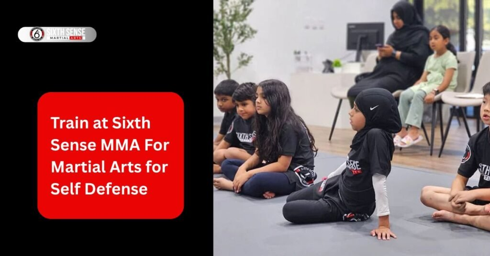

Best Martial Arts for Self Defense

Martial arts for self defense : Ever thought about why martial arts for self defense might be a smart move? Living today comes with its share of surprises and knowing how to protect yourself can bring peace of mind. Street fights happen and having some self defense skills ready can make all the difference. Picture this: you’re walking home late and an attacker shows up.
With a bit of training you could neutralize the threat fast. Plus it’s not just about safety. Learning martial arts also builds confidence and keeps you fit. Lots of folks start because they want to feel stronger and it works. Whether it’s krav maga or bjj picking up these skills now prepares you for real-world situations. So why wait? Getting started could change how you handle everyday life.
Why Pick Up Self Defense Skills Today
Safety matters more than ever right? These days you never know when trouble might find you. Picking up self defense skills gives you a solid way to stay safe. Imagine facing an attacker on a quiet street. Knowing martial arts for self defense like judo or muay thai lets you handle it with confidence. It’s not just about punches and elbow strikes; it’s about feeling ready.
Training also boosts your fitness and mental focus. Many people notice they sleep better and feel tougher after a few sessions. Plus with close-quarters combat skills you’re prepared for anything. Start today and you’ll see how it shapes your daily routine. Local classes like those at Sixth Sense MMA make it easy to begin.
Main Traits That Make a Martial Art Great for Protection
Wondering what sets the best martial arts for self defense apart? It’s all about traits that match real needs. Not every style fits the bill but the top ones share qualities that make them stand out. They handle close-range threats well teach you fast and work for anyone. Let’s look at what makes a martial art great for protection especially when facing an attacker or a street fight.
Handling Close-Range Threats
Getting close to an attacker can feel scary but the right martial art covers that. Take brazilian jiu-jitsu for example it’s built for close-quarters combat. You learn ground fighting and submission holds to take control. If someone grabs you these skills let you grapple and neutralize the danger. It’s perfect for those tight intense moments where striking martial arts might not be enough.
Speed in Picking Up Basics
Who has time for years of training? Not most of us! That’s why speed matters. Krav maga stands out here you can pick up self defense techniques in just a few weeks. Footwork and practical moves like knee strikes come quickly giving beginners a solid start. It’s a big plus when you need to feel ready for self defense situations fast.
Fit for Everyday People
Not everyone’s in top shape and that’s fine. The best martial art for self defense fits regular folks like you and me. Judo or wrestling for instance adjust to different sizes and fitness levels. They focus on practical self defense not just showy stuff. Anyone can jump in and learn to handle real-world threats.
Leading Martial Arts for Self Defense Suited for Real Protection
Looking for the best martial arts for self defense? You’ve got some solid options that shine in real-world situations. These styles are built to handle an attacker whether it’s a street fight or close-quarters combat. Each one brings unique skills like grappling techniques or striking martial arts to the table. From krav maga’s fast learning curve to brazilian jiu-jitsu’s ground fighting they cover different needs. Muay thai adds punch and elbow power while judo and wrestling bring control. Even sambo mixes it up with practical moves. Trying these out can show you what fits maybe even at a place like Sixth Sense MMA. They’re all about keeping you safe and ready.
Krav Maga
Krav maga stands out for self defense. This martial art comes from military training and focuses on quick practical techniques. You learn to neutralize an attacker fast with strikes and footwork. It’s great for beginners since basics kick in early. Imagine facing multiple attackers krav maga’s approach lets you react fast. No fancy stuff just what works in combat situations. Give it a shot if you want something effective fast.
Brazilian Jiu-Jitsu
Brazilian jiu-jitsu or bjj is a game-changer for close-quarters. This martial art teaches ground fighting and submission holds to control an opponent. If you end up on the ground bjj shines. It’s perfect for self defense situations where grappling takes over. Lots of folks love how it builds confidence too. Check it out those joint locks can turn the tables on anyone.
Muay Thai
Muay thai brings the heat with striking martial arts. Known as the “art of eight limbs ” it uses punches elbows and knee strikes. This style preps you for a street fight with its range of techniques. It’s tough but effective teaching you to spar and hit hard. You’ll feel stronger after a few sessions. It’s a solid pick if you want to learn quick powerful moves.
Judo
Judo offers a japanese martial art twist on self defense. It focuses on throws and joint locks to take down an attacker. This style works well in close combat using your opponent’s force against them. It’s practical and fits everyday people not just pros. Training here builds balance and control. Give it a try if you like a hands-on approach.
Wrestling
Wrestling is all about control in a fight. This martial art uses grappling techniques to pin or move an attacker. It’s great for ground fighting and works in real-world scenarios. You don’t need to be huge technique matters most. It pairs well with other styles like bjj. Jump in and see how it strengthens your self defense skills.
Sambo
Sambo mixes things up with a unique combat sport vibe. Coming from Russia it blends judo and wrestling with its own twists. You get joint locks and throws to handle an attacker effectively. It’s practical for street defense and teaches you to adapt. Not as common but worth a look if you want something different. It could surprise you with its results.
Positive Changes from Training in These Arts
Training in martial arts for self defense does more than just teach you to fight. It brings some cool changes to your life. Picture this: you start with krav maga or judo and soon you feel tougher sharper and more sure of yourself. Your body gets stronger from the punches and grappling techniques. Your mind stays calm under pressure thanks to the focus it builds. Plus handling an attacker in practice boosts your confidence big time. Folks at Sixth Sense MMA often say it spills over into daily life too. Stick with it and you’ll notice the difference in how you carry yourself.
Building Physical Strength
Working out with martial arts builds real muscle. Whether it’s muay thai’s elbow strikes or brazilian jiu-jitsu’s ground fighting you’re moving a lot. Sparring and footwork push your endurance too. Over time your body gets tougher ready for self defense situations. You don’t need to be a pro just showing up helps. It’s a natural way to get fit while learning to neutralize an attacker.
Sharpening Mental Focus
Training sharpens your mind as much as your body. Practicing judo or krav maga means staying alert during close-quarters combat. You learn to read an attacker’s moves and react fast. This focus carries over to everyday tasks making you calmer and clearer. People notice they handle stress better after a few sessions. It’s like a workout for your brain!
Boosting Confidence Levels
Feeling good about yourself grows with every class. Mastering self defense techniques like submission holds in bjj shows you can handle tough spots. Facing a street fight scenario in training builds that inner strength. You walk taller knowing you’re prepared. Friends might even ask what’s changed it’s that noticeable.

Steps to Find the Right Martial Arts for Self Defense Style for You
martial art for self defense can feel tricky but it’s worth the effort. Everyone’s different so the right style depends on what you need. Maybe you want to handle multiple attackers with krav maga or master ground fighting with brazilian jiu-jitsu. Start by figuring out your goals safety fitness or both. Then look at what’s around you like classes at Sixth Sense MMA. Finally jump in and try a few sessions. This way you’ll land on something that fits your life. Take it step by step and you’ll feel good about your choice.
Think About Your Goals
First off decide what you want from martial arts training. Are you after self defense skills for street fights or just to stay fit? Krav maga works if you need quick practical techniques against an attacker. Brazilian jiu-jitsu shines for close-quarters combat if you like grappling. Knowing this helps narrow it down. Think about your lifestyle too do you have time for regular sparring? Set a clear aim and you’re on the right track.
Check Local Options
Next see what’s out there near you. Look for places offering judo muay thai or other martial arts for self defense. A quick search might show Sixth Sense MMA has classes that fit. Check their schedules and what they teach striking or ground fighting maybe. Ask around or read reviews to get a feel. Finding a spot close by makes it easier to stick with it.
Try a Few Classes
Last give it a go! Sign up for a trial at a few places. Test out karate or sambo to see what clicks. You’ll feel the difference maybe muay thai’s punches suit you or judo’s throws do. Pay attention to how the instructor explains self defense techniques. It’s the best way to know if it feels right. Jump in and you’ll find your match.
Why Train at Sixth Sense MMA For Martial Arts for Self Defense
Ready to turn those self defense ideas into action? Sixth Sense MMA stands out as a spot that gets martial arts for self defense right. Tucked in Coppell Texas this place focuses on brazilian jiu-jitsu and practical skills to handle an attacker or street fight. Their classes build on grappling techniques and ground fighting so you walk away ready for real threats.
Instructors push you to develop that instinctive edge mixing fun with serious training. Folks rave about the supportive vibe it’s not just about punches or submission holds but growing stronger inside and out. If you’re eyeing krav maga or judo nearby this gym’s got the heart for beginners and pros alike. Drop in and you’ll see why it clicks for everyday protection.
Adult Jiu-Jitsu Sessions
Adults love the daily bjj classes here unlimited 60-minute sessions from beginner to advanced. Brazilian jiu-jitsu shines for self defense teaching you joint locks and ground fighting to neutralize someone close up. You build strength and calm under pressure turning nerves into quick moves. One guy shared how it helped him spot trouble early and react without freezing. It’s all about that real-world prep with sparring that feels challenging but safe.
Programs for Kids
Kids get their own fun twist with Intro to Jiu Jitsu Little Champions and Rising Champions daily classes tailored by age. These build self defense skills early like escaping grabs or standing tall against bullies. Parents notice huge shifts: one mom said her son went from shy to bold thanks to the focus on mental toughness alongside grappling. The group energy keeps it light but the lessons stick for life.
Open Mat Gatherings
Free open mat days let you roll with friends or family practicing those self defense techniques loose and easy. It’s a chill way to sharpen footwork or submission holds without the structure. Bring someone new and watch the group grow tighter perfect for testing judo throws or bjj escapes in a low-key spot. People say it boosts that team feel while prepping for actual scraps.
One-on-One Coaching
Want personal tweaks? Small group sessions give you close instructor eyes on your form. They spot what fits your style maybe more muay thai elbows or wrestling pins and guide you toward goals like handling multiple attackers. It’s empowering with coaches who cheer every win big or small. That one-on-one vibe turns weak spots into strengths fast ideal for custom self defense growth.

Customer Reviews
Stacie Arce
“My son has been coming since December and grown so much. Coach Matheus is a jiu jitsu master from Brazil but more important than that, he is a skilled coach. He really makes the place special.”
Danilo De souza
“Family friendly and professional. My kids love Coach Matheus and Coach Milly. They’ve grown so much in confidence and discipline learning with them! 100% recommended!”
Márcio Rabelo
“Such a good vibe at this gym. Everyone’s super friendly and the coaches really know their stuff. It’s one of those places you feel comfortable right away with Coach Matheus, great mix of hard work and fun. Definitely worth checking out if you’re into Jiu Jitsu!”
juwaryiyya
“Extremely welcoming staff, the coach explained everything so well. It is the favorite part of my day! I also feel very comfortable as a Muslim woman because of how the room is shaped like an L giving privacy and comfort for sisters.”
Kaivan Askari
“Professor Matheus is amazing with the kids. His children’s classes are amazing. He also has a very consistent teaching style for adults as well.”
Contact Us
Got a question or ready to start your journey? Our team at Sixth Sense MMA is here for you, day or night. Located at 817 S MacArthur Blvd #100, Coppell, TX 75019, we’re just a step away. Ring us up at 469-972-7800 or shoot an email to info@sixthsensemma.com someone’s always around to chat. Need a quick answer? Drop by during our open hours, and we’ll sort you out. Our crew loves helping, whether it’s about classes or that free trial you’ve been eyeing. If any doubt pops up, don’t wait reach out, and let’s get you moving!
Conclusion
Wrapping this up the best martial arts for self defense like krav maga brazilian jiu-jitsu or muay thai can change how you move through the world. They tackle close-quarters combat build quick skills and suit anyone jumping in. From wrestling’s control to sambo’s mixes each style adds to your toolkit against an attacker. Throw in perks like sharper focus and bigger confidence and it’s clear why starting matters. Places like Sixth Sense MMA make it simple with adult sessions kids’ programs open mats and coaching that fits real life. Don’t sit on it pick a class try the moves and own your safety. You’ll wonder why you waited.
Follow Us on Social Media
Stay connected with Sixth Sense MMA through our social media channels. Follow us for class updates, training tips, and a closer look at our self defense community.
FAQ’s
Krav Maga is widely considered the best martial art for self defense because it focuses on real-world combat techniques. It teaches quick responses, effective strikes, and defense against multiple attackers. Brazilian Jiu-Jitsu and Muay Thai are also excellent for handling close-quarters combat and improving fitness.
Yes, Brazilian Jiu-Jitsu (BJJ) is one of the most practical martial arts for self defense. It specializes in ground fighting and submission holds, helping you control or neutralize an attacker without relying on size or strength. It’s especially effective in one-on-one situations.
It depends on the martial art and your consistency. Styles like Krav Maga teach practical self defense techniques in a few weeks, while arts such as Judo or BJJ may take several months to build solid control and reflexes. Training regularly at a place like Sixth Sense MMA accelerates progress.
Beginners often find Krav Maga, Judo, or Muay Thai easy to start with. These martial arts focus on simple, effective techniques rather than complex forms. They teach balance, movement, and quick reactions — great for people new to self defense training.
Absolutely! Kids’ programs like “Intro to Jiu Jitsu” or “Little Champions” at Sixth Sense MMA teach self defense skills in a fun, safe way. Children learn confidence, focus, and discipline while practicing escapes, balance, and coordination.
Train with us in Coppell
The first class is free. Shorts, a t-shirt and a water bottle. We lend the rest.
Book a free class